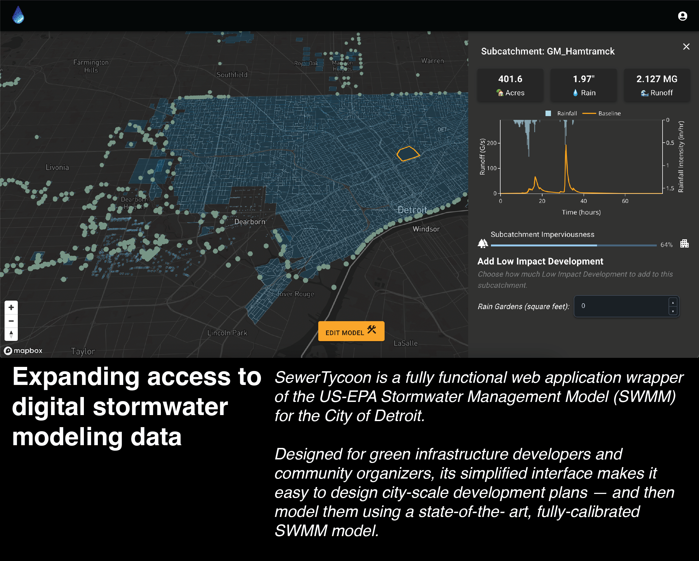
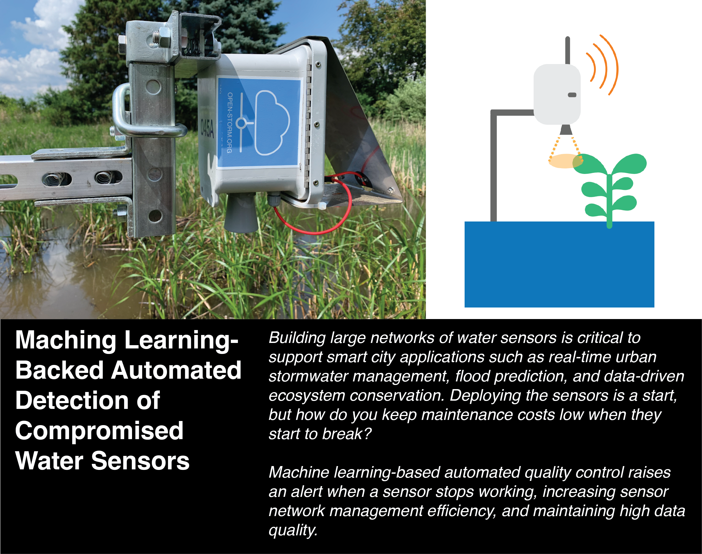
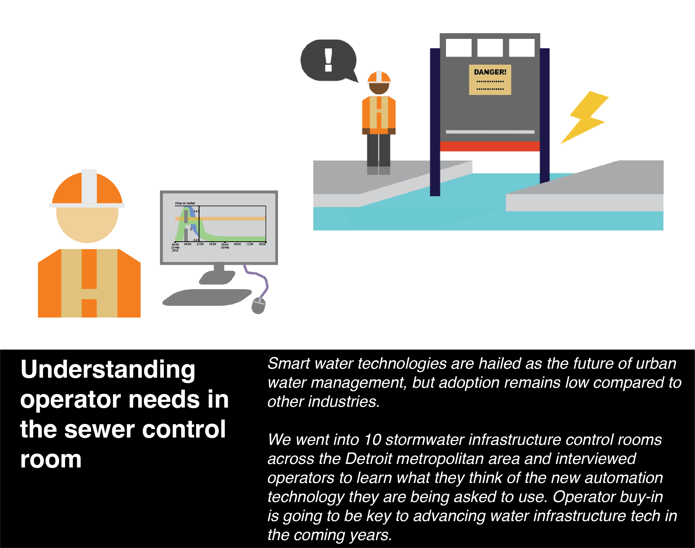

Projects




I'm a PhD candidate at the University of Michigan's Digital Water Lab, studying smart water technologies. I develop data analytics pipelines for collecting, processing, and visualizing water data, fueling insights in urban infrastructure management.
I study barriers to adoption of smart water technologies at the Digital Water Lab.
I developed a low-power, renewable energy-charged illuminated buoy to reduce accidental wildlife catchment in fishing nets with the SenSIP Center.
I pototyped components for table-top experiments with the goal of developing an optical quantum memory device with the Lorenz Lab.
University of Michigan, Civil and Environmental Engineering Department; Advisor: Branko Kerkez
University of Michigan, Electrical and Computer Engineering Department
University of Michigan, Civil and Environmental Engineering Department
University of Illinois at Urbana-Champaign, Physics Department; Minors in Geography, Informatics (Data Science), and Electrical Engineering